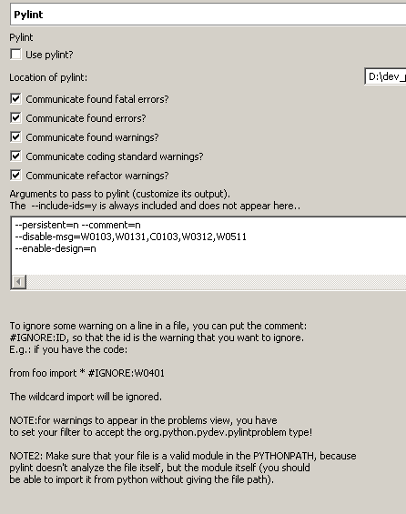
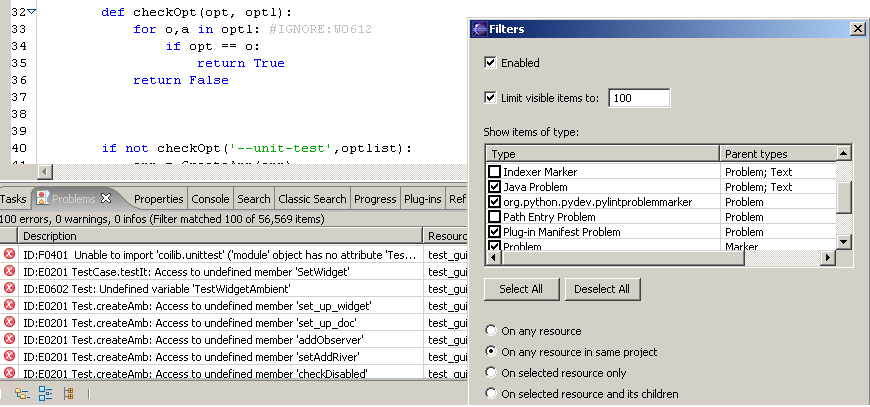

PyLint (v.0.5.0) is integrated in pydev!
So, first thing is: why not
pychecker, as it is (I think) more used in the python community.
Well, mainly because pychecker was getting too slow and it was too anoying waiting for it to complete, anyway,
I've submitted a feature request for pychecker, and if it is accepted, it will also be integrated (user choice
on what to use then).
Feature request is: I just can't specify a single file to be checked on pychecker, and it tends
to get really slow, as it works import by import...(I could however make it happen only when
the user requests for a single file, but if I have
to do that, it would be as having it as an external tool!).
NOTE:
Pylint is
disabled by default, so, if you want to activate it (even knowing that pylint it is still beta), you should
go to the pylint preferences page and activate it (note: after activating it, you have to clean your project on the project menu
so that the files are checked with pylint).

Well, moving on: The integration is done so that it is integrated with the eclipse
builder. That means that whenever you change a file it automatically
passes pylint (if autobuild is on).
This, however, has a drawback: Pylint can be slow at sometimes, and if you
work in big projects it can be kind of slow (anyway, you can stop the builder process
at any time if you want) - you should expect that it takes some secs. for each
file it analyzes, so, if you are working with about 700 files - like I am - it can
take a long time - more than 40 minutes to get all the info on the project...
As this can be quite annoying sometimes, I would recommend not using automatic build, so that it only
builds when you do a full build (Ctrl+B - see project menu).
Anyway if you do a full build only once and then just work with the deltas, there should be no problem...
And if you don't see the problems on your problems view, don't forget to enable it in the problems view filter.

Bad part is that I won't be using this feature very much because of some problems with pylint in my projects. I've
already submitted the bugs, and I only intend to really maintain it after I can use correctly and pylint itself
is stable enough, so, this means that it will be considered ALPHA until there (and I won't be giving support
until pylint itself is stable).